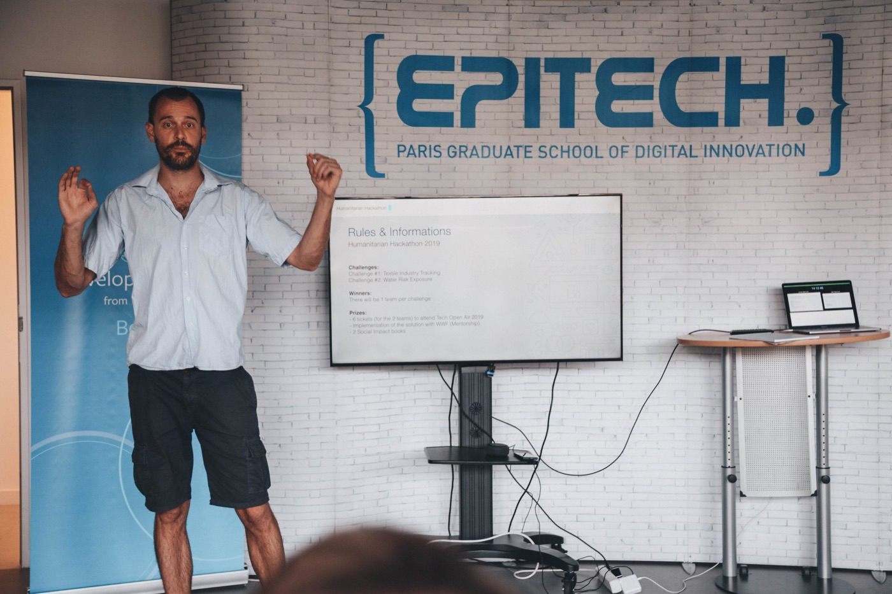

04.1
Introducción a los SIG
Conceptos básicos y práctica en ArcGIS y QGIS, para principiantes y no especialistas.
Pilar 04 · SIG y desarrollo de capacidades
El mejor análisis es el que su equipo puede repetir. Impartimos formaciones prácticas y talleres en ArcGIS, QGIS y Google Earth Engine, y acompañamos a los equipos para que automaticen sus propios flujos de trabajo.

Contexto
Contamos con varios años de experiencia impartiendo cursos de SIG aplicado a nivel universitario, guiando a cientos de estudiantes desde su primer mapa hasta el análisis espacial autónomo en ArcGIS y QGIS.
Fuera de la universidad, nuestro equipo ha formado a socios de conservación y ha facilitado talleres con públicos muy distintos, desde talleres sobre políticas REDD+ con comunidades locales en la Amazonia brasileña hasta sesiones técnicas con equipos de programas. La formación está disponible en inglés, español, alemán y portugués.

Qué ofrecemos
Formación práctica en ArcGIS, QGIS y Earth Engine para equipos que quieren desarrollar capacidades espaciales internas y mantener el trabajo en marcha.
Conceptos básicos y práctica en ArcGIS y QGIS, para principiantes y no especialistas.
Datos satelitales, clasificación de la cobertura del suelo y detección de cambios en Google Earth Engine, con Python o JavaScript.
Formación construida en torno a sus propios datos y preguntas, presencial o en remoto.
Ayuda para convertir tareas SIG manuales y repetitivas en scripts documentados y reproducibles.
Sesiones facilitadas que utilizan mapas para reunir a comunidades, socios y responsables de la toma de decisiones.
Experiencia
Nuestro equipo ha formado a estudiantes, equipos de conservación y actores locales en SIG y teledetección. Esto incluye:
Cuéntenos brevemente su proyecto. Normalmente respondemos en un día laborable.